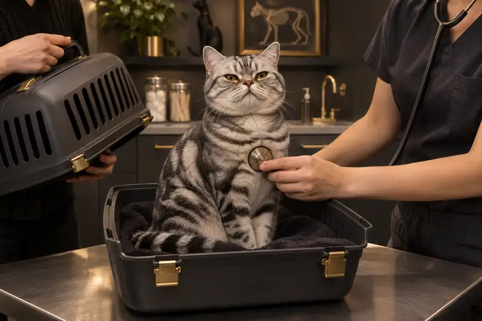

Koci Notatnik / Kocie opowieści
Zdrowie Jego Mruczności · ok. 6 min czytaniaKot u weterynarza. Personel odpowie za tę wycieczkę.
Kochani, dziś relacja z miejsca, w którym nie poproszono mnie o autograf, tylko o wejście na wagę. Mój człowiek nazwał to „wizytą kontrolną”. Ja nazywam to bardzo odważnym posunięciem personelu.

Zaczęło się niewinnie. Człowiek przyszedł z miną, którą robi zawsze, kiedy ma pomysł i jeszcze nie wie, dlaczego jest zły.
— Jedziemy na przegląd.
Spojrzałem na niego. Potem na siebie. Futro doskonałe, wąsy symetryczne, osobowość bezkonkurencyjna. Jeśli ktoś w tym domu wymaga przeglądu, to urządzenie otwierające mi saszetki.
Transporter: limuzyna bez minibaru
Na szczęście mój człowiek jedną rzecz zrobił wcześniej dobrze: transporter nie wyskoczył z szafy pięć minut przed wyjazdem. Stał w domu otwarty, z moim kocem. Mogłem go obwąchać, wejść, wyjść i uznać za kolejną nieruchomość.
Notatka dla obsługi: oswajaj kota z transporterem stopniowo, również między wizytami. Znany koc i spokojne nagradzanie dobrowolnego wejścia pomagają budować dobre skojarzenia. Pościg po mieszkaniu nie jest częścią przygotowań.
Człowiek włożył do środka znajome posłanie i sprawdził zamknięcie. Brawo. W końcu przewozimy markę osobistą, nie zakupy.
Podróż gwiazdy. Bez wystawiania głowy przez okno.
Próbował coś mówić o pięknej pogodzie. Nie podjąłem rozmowy. To był przejazd służbowy.
W samochodzie jadę w zamkniętym, stabilnie zabezpieczonym transporterze, ustawionym zgodnie z instrukcją jego producenta. Nie na kolanach kierowcy i nie luzem między pedałami. Człowiek i bez dodatkowych atrakcji ma dość trudne zadanie: prowadzić i nie komentować mojego śpiewu.
Można częściowo osłonić transporter lekkim materiałem pachnącym domem, dbając o swobodny przepływ powietrza. Ja lubię odrobinę prywatności. Paparazzi mają dziś wolne.
Poczekalnia nie spełniała standardów czerwonego dywanu
Był tam pies. Duży. Patrzył tak, jakby jeszcze nigdy nie widział kogoś ważnego.
Mój człowiek chciał uchylić drzwiczki, „żebym zobaczył”. Kochani. Widzę. Mam oczy. Nie potrzebuję dostępu do całego budynku.
W poczekalni zostałem w zamkniętym transporterze, możliwie daleko od innych zwierząt. Człowiek postawił go na stabilnym, przeznaczonym do tego miejscu, zamiast urządzać mi wystawę na podłodze pod psim nosem.
Jeśli kot bardzo się stresuje, uprzedź przychodnię przy umawianiu wizyty. Zapytaj o spokojniejsze warunki oczekiwania. Plan ustalony wcześniej jest lepszy niż improwizowany koncert dwóch gatunków.
Doktor nie dała się nabrać na mój prestiż
W gabinecie człowiek oznajmił:
— On w domu jest taki odważny.
Oczywiście. W domu mam własną kanapę, znajome zapachy i podwładnego. Tu ktoś właśnie położył stetoskop obok mojej osoby. Zupełnie inna sytuacja biznesowa.
Lekarka dała mi chwilę. Nie wytrząsnęła mnie z transportera jak ostatniego cukierka. Zdjęła jego górę i część badania mogłem spędzić na znajomym posłaniu. Doceniam obsługę, która rozumie procedury VIP.
Strach, syczenie czy chowanie się podczas wizyty nie oznaczają, że kot jest „złośliwy”. Zespół może dopasować tempo i sposób badania. Opowiedz o wcześniejszych trudnościach; jeśli potrzebne jest wsparcie lekami, lekarz dobiera je indywidualnie. Człowiek nie urządza w domu apteki na własną łapę.
Co człowiek miał przynieść zamiast samych emocji?
Gdy padło pytanie o apetyt, mój człowiek otworzył usta i powiedział: „No… je”. Wspaniały raport. Równie dobrze mógł dodać, że posiadam futro.
Na szczęście miał notatki. Przygotuj historię leczenia, listę podawanych leków i suplementów oraz pytania. Jeśli coś się zmieniło, zapisz co i od kiedy: jedzenie, picie, kuwetę lub zachowanie. Film pokazujący niepokojący objaw może pomóc w rozmowie, ale nie zastępuje badania.
Sprawdź wcześniej w przychodni, czy ta konkretna wizyta wymaga przygotowania, próbki albo przerwy w jedzeniu. Nie wprowadzaj głodówki „na wszelki wypadek” i nie odstawiaj samodzielnie leków.
Pytania z kociego salonu
- Czy kot powinien jechać na czczo?
- To zależy od celu wizyty i jego zdrowia. Ustal zasady z przychodnią. Sam fakt wizyty nie jest uniwersalną instrukcją głodówki.
- Co, jeśli kot bardzo boi się transportera lub gabinetu?
- Powiedz o tym przed wizytą. Lekarz może zaplanować przygotowanie, sposób badania i ewentualne leki. Nie podawaj samodzielnie środków uspokajających.
- Czy można odpuścić kontrole, jeśli kot wygląda świetnie?
- Dobry wygląd nie zastępuje oceny zdrowia. Terminy kontroli i profilaktykę ustal z lekarzem odpowiednio do wieku i potrzeb kota. Mój dobry profil jest bezdyskusyjny. Moje zdrowie wymaga osobnej uwagi.
Powrót do rezydencji i ocena personelu
Po powrocie człowiek dał mi spokój i dostęp do mojego bezpiecznego miejsca. Nie wyciągał mnie na zdjęcie „dzielnego pacjenta”. Zanotował zalecenia i termin dalszych działań, jeśli były potrzebne.
Patrzyłem, jak chowa dokumenty. Trochę niezdarny, trochę przewrażliwiony, ale przynajmniej pamięta, że poza luksusową otoczką jestem żywym kotem.
Wieczorem pozwoliłem mu usiąść obok. Niech wie, że tym razem zachowuje stanowisko.
Wystawiam obsłudze cztery łapy na pięć. Piątą potrąciłem za wagę. Nadal uważam, że powinna najpierw pokazać jego wynik.
Przed wizytą sprawdź sześć rzeczy
- Transporter: znany, bezpieczny, sprawne zamknięcie.
- Podróż: stabilne zabezpieczenie i spokojny przejazd.
- Przygotowanie: instrukcje przychodni dotyczące karmienia i leków.
- Dokumenty: historia leczenia, lista leków, obserwacje i pytania.
- Stres: poinformuj przychodnię wcześniej o trudnościach kota.
- Po wizycie: zanotuj zalecenia i zapewnij spokojny odpoczynek.